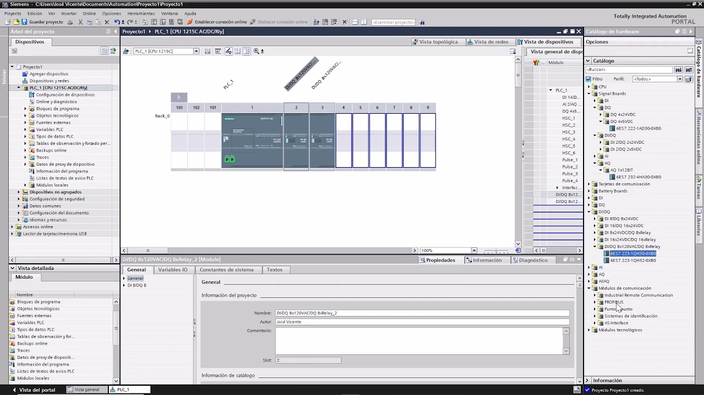
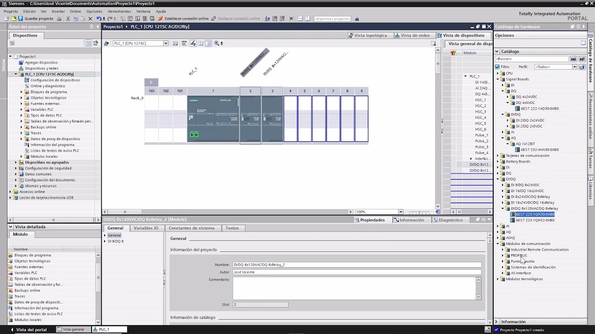

Bienvenido a nuestra página de descarga de software especializado en ingeniería electrónica. Aquí encontrarás programas esenciales como Cadesimu, PC Simu, Proteus, Multisim y LabVIEW, que son herramientas fundamentales para el diseño, simulación y prueba de circuitos electrónicos.
Estos programas te permitirán:
Crear y simular circuitos electrónicos con precisión.
Programar y depurar sistemas embebidos.
Realizar análisis complejos de sistemas y obtener datos en tiempo real.
Asegúrate de descargar siempre desde fuentes confiables para mantener la seguridad de tu sistema y disfrutar de las últimas actualizaciones y funcionalidades.
Explora nuestras opciones y optimiza tus proyectos con el mejor software disponible en el mercado.
Cadesimu es una poderosa herramienta de simulación de circuitos electrónicos diseñada para ayudar a ingenieros, técnicos y estudiantes a visualizar y analizar el comportamiento de circuitos eléctricos y electrónicos. Este software permite la creación de esquemas detallados y la simulación precisa de circuitos, facilitando el aprendizaje y la resolución de problemas en el diseño electrónico.
Entre sus características destacadas se incluyen:
Interfaz intuitiva para la creación de esquemas electrónicos.
Simulación en tiempo real de circuitos analógicos y digitales.
Biblioteca extensa de componentes electrónicos.
Capacidad de realizar análisis de corriente, voltaje y frecuencia.
Cadesimu es una herramienta esencial para cualquiera que busque mejorar sus habilidades en diseño y análisis de circuitos electrónicos, proporcionando un entorno de simulación robusto y fácil de usar.

Clave: wwww.alvelectronics.com
Es una plataforma de ingeniería integral desarrollada por Siemens para la automatización industrial. Proporciona un entorno unificado para el diseño, programación, y mantenimiento de sistemas de automatización, facilitando la integración y optimización de procesos industriales.
Entre sus características destacadas se incluyen:
Combina múltiples herramientas de ingeniería en una sola interfaz para programar y configurar controladores, HMI, redes y sistemas de control de movimiento.
Soporta la programación de controladores lógicos programables (PLC) de la serie SIMATIC S7, con opciones avanzadas de diagnóstico y simulación.
Incluye herramientas para diseñar y configurar interfaces hombre-máquina (HMI), permitiendo la creación de paneles de control intuitivos y eficientes.
Facilita la integración de dispositivos de automatización y comunicación, garantizando una configuración rápida y precisa.
Ofrece capacidades de simulación y pruebas para verificar el funcionamiento del sistema antes de su implementación en el entorno real.
Proporciona herramientas para la gestión de proyectos, incluyendo control de versiones y colaboración en equipo.
Integra funciones de seguridad para proteger la propiedad intelectual y gestionar el acceso de usuarios.
TIA Portal es una herramienta esencial para ingenieros de automatización que buscan unificar y simplificar el proceso de desarrollo y mantenimiento de sistemas industriales.
 

Clave: wwww.alvelectronics.com
PC Simu es una herramienta avanzada de simulación diseñada para ayudar a ingenieros y técnicos en la programación y prueba de controladores lógicos programables (PLC). Este software permite crear y probar programas de PLC en un entorno virtual, reduciendo la necesidad de equipos físicos y facilitando el aprendizaje y desarrollo de sistemas de control industrial.
Entre sus características destacadas se incluyen:
Interfaz gráfica intuitiva para la programación de PLC.
Simulación en tiempo real de sistemas de control industrial.
Compatibilidad con múltiples lenguajes de programación de PLC.
Herramientas de diagnóstico y análisis de errores.
PC Simu es una herramienta esencial para estudiantes y profesionales que buscan mejorar sus habilidades en la programación y simulación de PLC, proporcionando un entorno de prueba seguro y eficiente.

Clave: wwww.alvelectronics.com
Es un innovador software de simulación 3D diseñado para la enseñanza y el aprendizaje de la automatización industrial. Ofrece un entorno virtual donde los usuarios pueden crear, simular y controlar sistemas industriales con gran realismo y detalle.
Entre sus características destacadas se incluyen:
Simula fábricas y procesos industriales en un entorno tridimensional altamente detallado y realista.
Fácil de usar, con herramientas de arrastrar y soltar para diseñar y modificar sistemas industriales.
Compatible con diversos controladores lógicos programables (PLC), incluyendo marcas populares como Siemens, Allen-Bradley y Mitsubishi.
Incluye una amplia biblioteca de componentes industriales, como cintas transportadoras, sensores, motores y actuadores.
Se puede integrar con software de programación de PLC, SCADA y HMI para una experiencia completa de automatización.
Permite la simulación en tiempo real y la creación de escenarios de prueba para entrenamiento y desarrollo de habilidades.
Ideal para la formación en automatización industrial, proporcionando un entorno seguro y controlado para la práctica y experimentación.
Factory I/O es una herramienta esencial para estudiantes, educadores y profesionales que buscan una comprensión profunda y práctica de los sistemas de automatización industrial.

Clave: wwww.alvelectronics.com
Proteus es un software de diseño y simulación de circuitos electrónicos ampliamente utilizado por ingenieros, técnicos y estudiantes. Este potente programa permite la creación de esquemas detallados, la simulación precisa de circuitos electrónicos y la programación de microcontroladores en un entorno virtual, lo que facilita el desarrollo y prueba de proyectos electrónicos sin necesidad de hardware físico.
Entre sus características destacadas se incluyen:
Interfaz intuitiva para el diseño de esquemas electrónicos y PCB.
Simulación en tiempo real de circuitos analógicos y digitales.
Compatibilidad con una amplia variedad de microcontroladores.
Biblioteca extensa de componentes electrónicos y módulos.
Proteus es una herramienta esencial para cualquiera que busque mejorar sus habilidades en diseño y simulación de circuitos electrónicos, proporcionando un entorno de simulación robusto y fácil de usar que abarca desde la teoría hasta la implementación práctica.

Clave: wwww.alvelectronics.com
Multisim, desarrollado por National Instruments, es una herramienta líder en el diseño y simulación de circuitos electrónicos. Su enfoque interactivo y visual facilita a ingenieros, educadores y estudiantes la comprensión, el diseño y la prueba de circuitos electrónicos. Integrando potentes tecnologías de simulación con un entorno de captura esquemática, Multisim ayuda a optimizar los procesos de aprendizaje y desarrollo de proyectos.
Entre sus características más notables se encuentran:
Una interfaz de usuario intuitiva que simplifica la captura de esquemas.
Simulación de circuitos SPICE, estándar de la industria, para análisis en tiempo real.
Herramientas de análisis que incluyen análisis de Fourier, análisis de ruido, entre otros.
Una vasta biblioteca de componentes electrónicos y símbolos.
Multisim es vital para cualquier persona en el ámbito de la electrónica que busque una solución eficiente y eficaz para el diseño y análisis de circuitos electrónicos.

Clave: wwww.alvelectronics.com
LabVIEW (Laboratory Virtual Instrument Engineering Workbench) desarrollado por National Instruments, es una plataforma y entorno de desarrollo diseñado para permitir a ingenieros y científicos visualizar y automatizar sus pruebas y mediciones de datos a través de interfaces gráficas. LabVIEW es especialmente útil en la adquisición de datos, control de instrumentos, y automatización de pruebas.
Entre sus características más destacadas se encuentran:
Una interfaz de programación gráfica basada en diagramas de bloques que simplifica la visualización del flujo de datos.
Amplia compatibilidad con hardware de adquisición de datos, instrumentos de medición y sensores.
Capacidades robustas de análisis y procesamiento de señales.
Facilidad para desarrollar aplicaciones distribuidas y en red.
LabVIEW es reconocido por su capacidad para simplificar la programación compleja y por su adaptabilidad a múltiples aplicaciones, convirtiéndolo en una herramienta indispensable en cualquier laboratorio de pruebas o entorno de desarrollo de ingeniería.


Clave: wwww.alvelectronics.com
es una herramienta de software avanzada y altamente reconocida para el análisis, simulación y modelado de sistemas eléctricos de potencia. Utilizado por ingenieros, consultores y académicos de todo el mundo, DIgSILENT PowerFactory ofrece una amplia gama de funcionalidades que abarcan desde el diseño de redes eléctricas hasta la optimización de la operación y el control.
Entre sus características más destacadas se encuentran:
Realiza cálculos precisos del flujo de carga para optimizar el rendimiento y la eficiencia de las redes eléctricas.
Permite el estudio de comportamientos dinámicos y transitorios en sistemas eléctricos, crucial para la estabilidad y confiabilidad de la red.
Proporciona herramientas para la evaluación de fallas y la planificación de protecciones.
Incluye funcionalidades para la optimización de la operación de redes eléctricas, reduciendo costos y mejorando la eficiencia.
Facilita el análisis y la integración de fuentes de energía renovable como la solar y la eólica en las redes eléctricas.
Permite la identificación y mitigación de problemas de calidad de la energía relacionados con armónicos.
Incluye capacidades para el modelado y simulación de diversos dispositivos de control y automatización.
Ofrece una interfaz de usuario intuitiva y personalizable, facilitando el acceso a sus potentes funcionalidades.
DIgSILENT PowerFactory es conocido por su precisión en el modelado y la simulación, lo que permite a los ingenieros tomar decisiones informadas y basadas en datos confiables.
Clave: wwww.alvelectronics.com